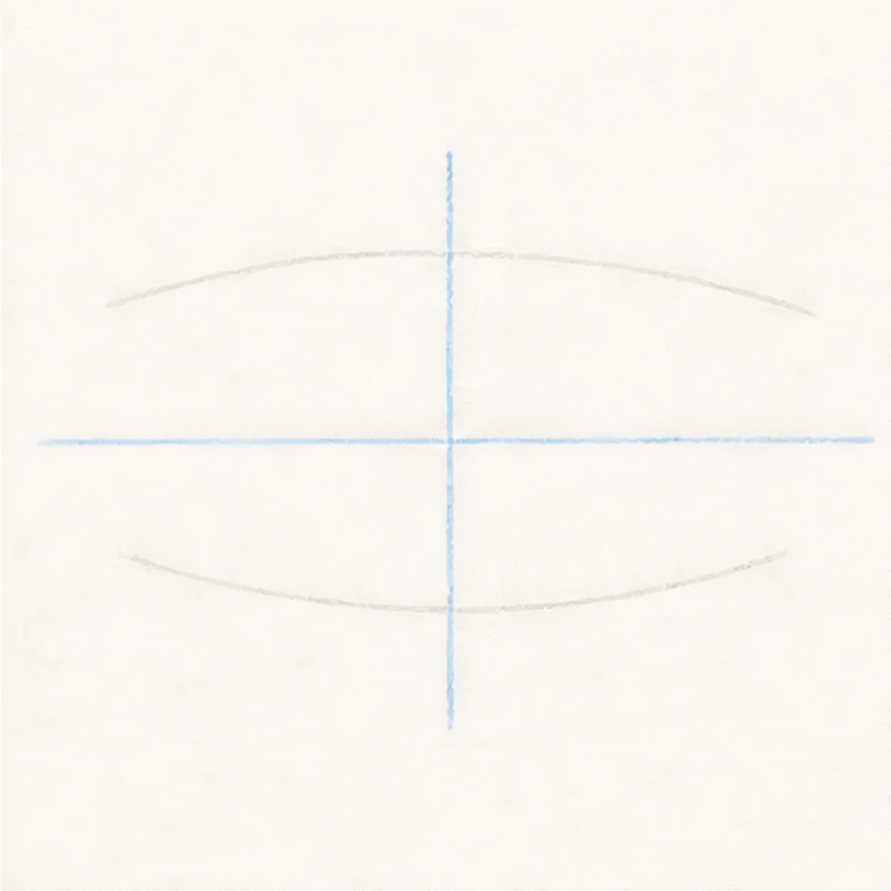
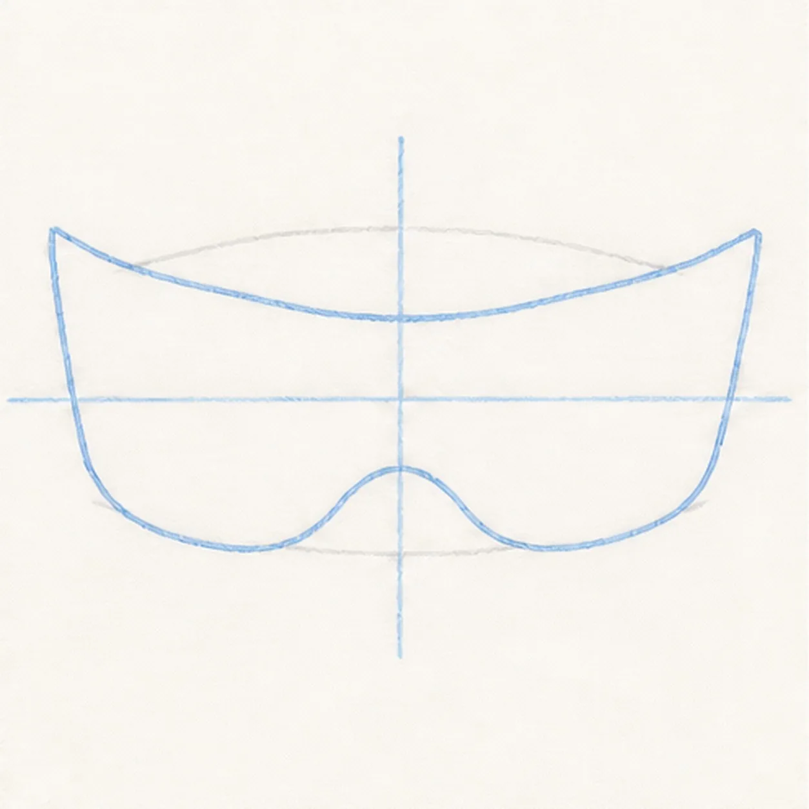
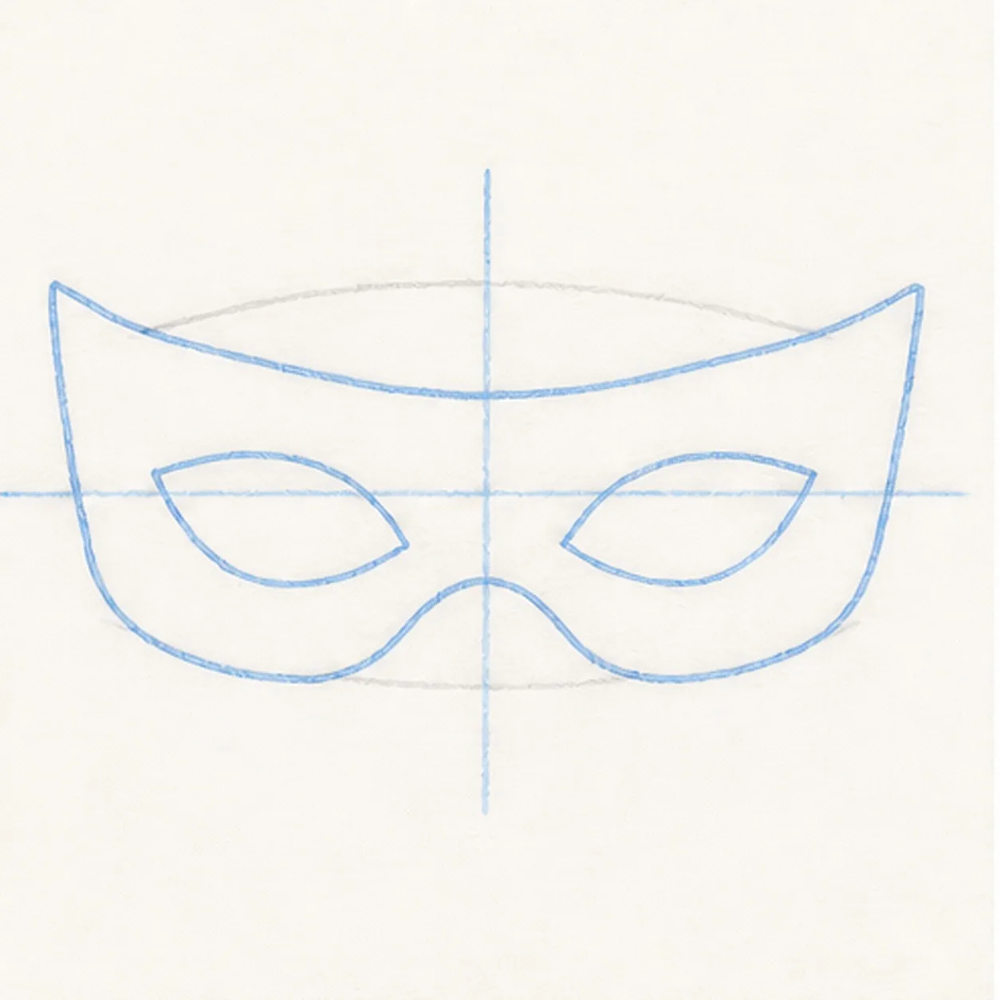
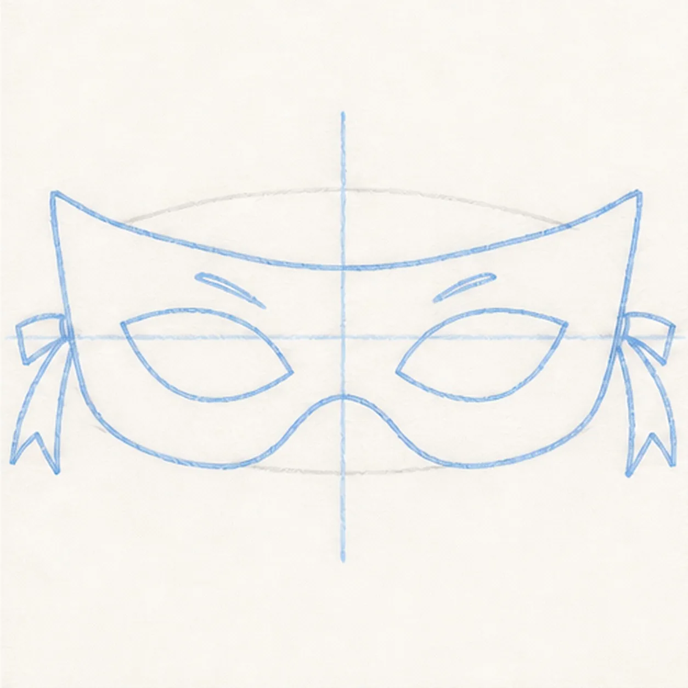
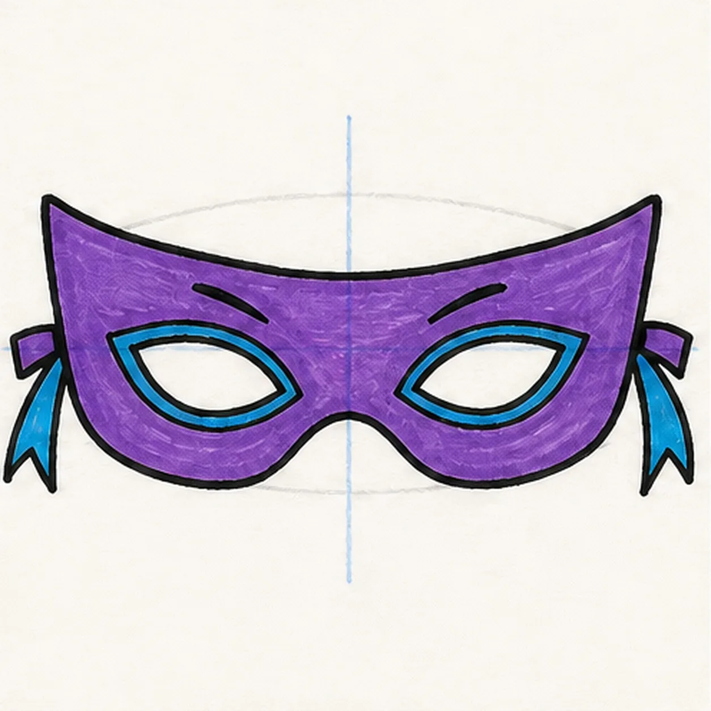

Felt-tip marker mode
Let's draw a cartoon superhero mask
Treat this as one playful practice round: sketch the idea loosely, simplify the shapes, then commit with confident marker outlines and bright fills.
-
01

Set the mask guides
Draw a light horizontal eye axis, a vertical center line, and shallow upper and lower guide arcs.
Doodle tip: Ghost the arcs before committing, then compare the empty space on both sides of the center line. Balanced negative space matters more than perfect measurement.
-
02

Sweep the mask shape
Use the guides to draw the full outer mask silhouette with a swept brow, pointed corners, rounded lower edges, and a small center nose dip.
Doodle tip: Pull each long brow curve in one relaxed stroke. Rotate the paper if your wrist starts making the curve scratchy.
-
03

Open the eye shapes
Add two matching almond-shaped eye openings along the established eye axis.
Doodle tip: Draw one opening lightly, then compare its height and distance from the center line before echoing it on the other side.
-
04

Tie on the ribbon tails
Attach short ribbon tails to both outer corners and add two small crease marks above the existing eye openings.
Doodle tip: Keep the ribbon tails short and angular so they support the mask silhouette instead of competing with it.
-
05

Ink the secret colors
Trace the established mask, openings, ribbons, and creases in black, then fill the mask purple and the eye rims and ribbon tails cyan.
Doodle tip: Let each marker area dry before a second pass. Fill from the black edge inward and leave a little streak texture so the color stays handmade.
-
06

Power up the mask
Erase the remaining light guides, strengthen the existing black contours, tidy the purple and cyan fills, and add tiny white highlights to the already colored areas.
Doodle tip: Stop before adding eyes, a face, a logo, or a border. The swept brow, eye openings, and tied ribbon tails already carry the superhero character.